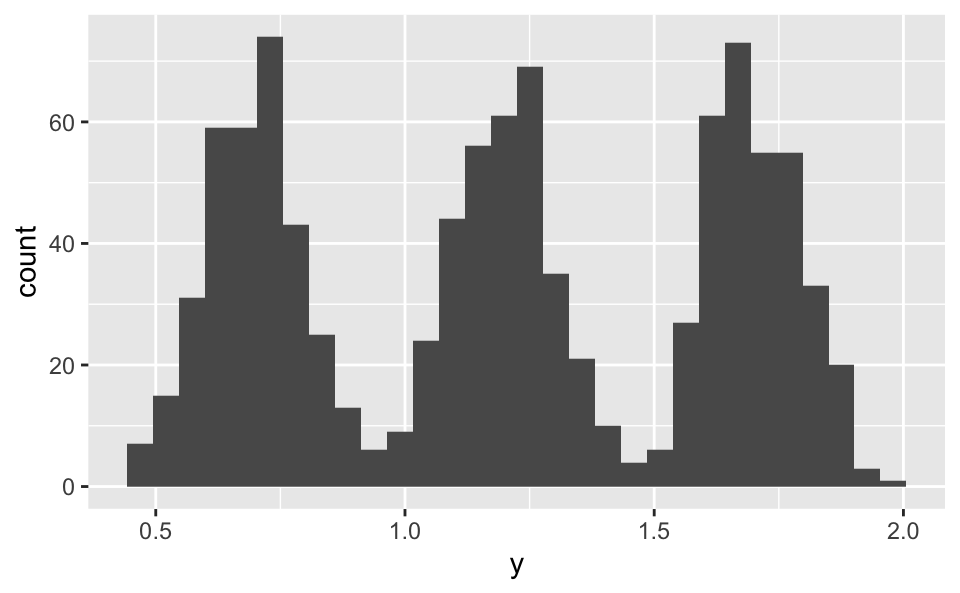
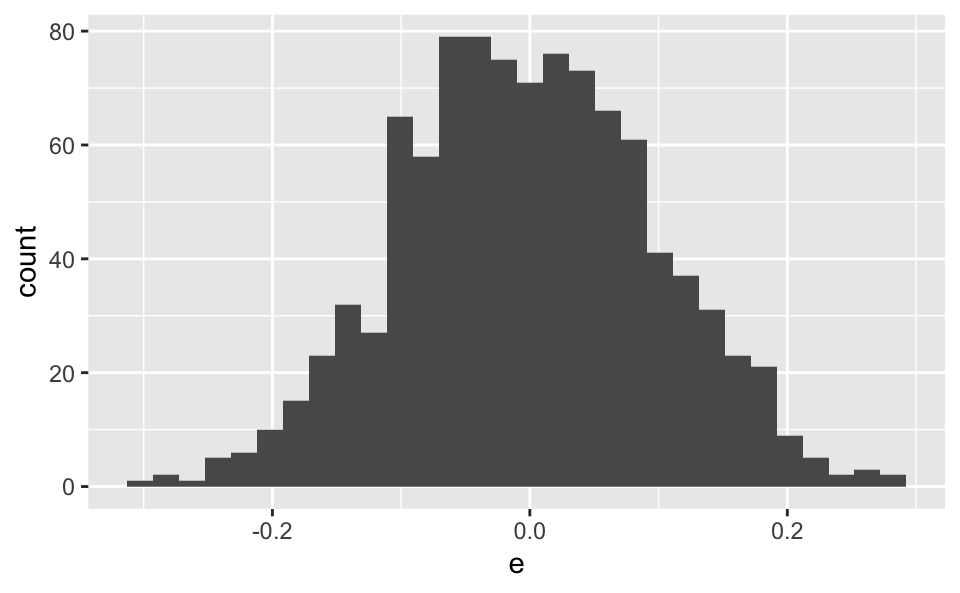
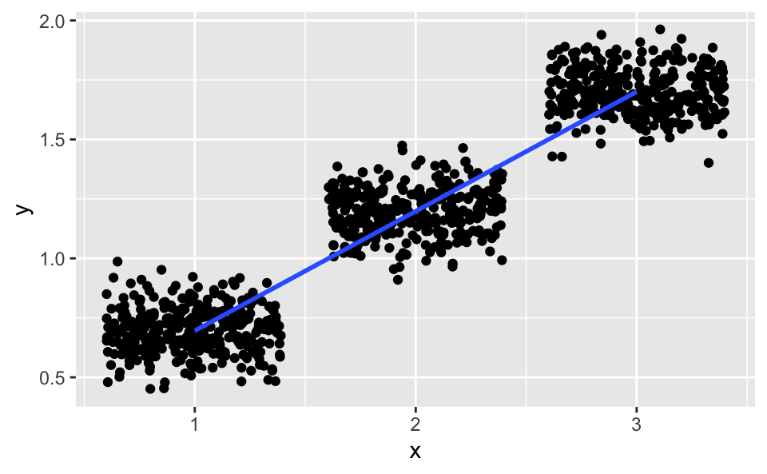
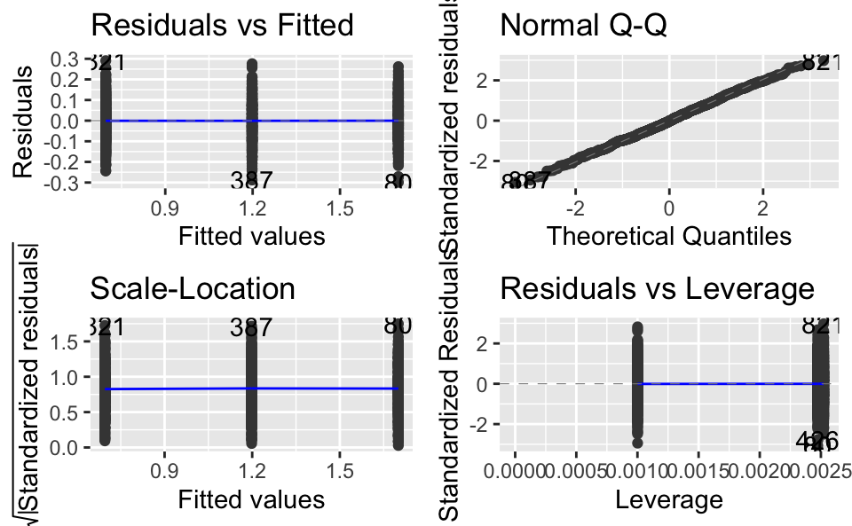

Manchmal hört man, die Regression verlange, dass die Y-Variable normalverteilt sei. Das ist keine Annahme der Regression. Stattdessen sollten die Residuen normalverteilt sein.
Übrigens ist die Normalverteilung der Residuen laut Gelman und Hill 2007 keine wichtige Annahmen in vielen Situationen: Der Verlauf der Regressionsgeraden wird nämlich die die Normalität der Residuen nicht beeinflusst (vgl. S. 46f).
Die Normalität der Residuen spielt dann eine Rolle, wenn man an der Güte individueller Vorhersagen (also für einzelne Beobachtungen) interessiert ist.
library(tidyverse)## ── Attaching packages ─────────────────────────────────────── tidyverse 1.3.1 ──## ✓ ggplot2 3.3.5 ✓ purrr 0.3.4
## ✓ tibble 3.1.2 ✓ dplyr 1.0.7
## ✓ tidyr 1.1.3 ✓ stringr 1.4.0
## ✓ readr 1.4.0 ✓ forcats 0.5.1## ── Conflicts ────────────────────────────────────────── tidyverse_conflicts() ──
## x dplyr::filter() masks stats::filter()
## x dplyr::lag() masks stats::lag()library(ggfortify)d <-
tibble(
x = sample(1:3, size = 999, prob = c(.33, .33, .33), replace = TRUE),
e = rnorm(n = 999, sd = 0.1),
y = 0.2 + 0.5*x + e
)\(Y\) ist klar nicht normalverteilt:
d %>%
ggplot(aes(x = y)) +
geom_histogram()
Die Residuen sind normalverteilt:
d %>%
ggplot(aes(x = e)) +
geom_histogram() 
ggplot(d) +
aes(x = x, y = y) +
geom_jitter() +
geom_smooth(method = "lm")
lm1 <- lm(y ~ x, data = d)autoplot(lm1)
Keine Verletzungen der Annahmen in den Residuen erkennbar.